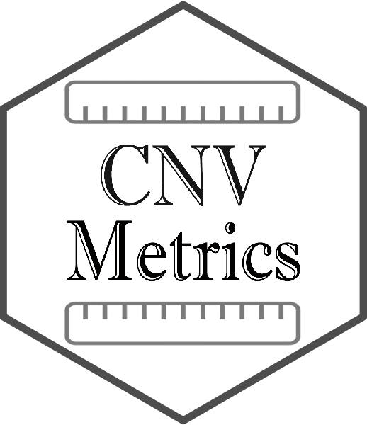

The CNVMetrics package offers multiple quantitative metrics of similarity between copy number profiles. Among these are metrics based on CNV status calls only (amplification/deletion status) or on the level of amplification/deletion. In addition, a visualization tool is provided to explore resulting metrics.
Citing
If you use this package for a publication, we would ask you to cite the following:
Belleau P, Deschênes A, Beyaz S et al. CNVMetrics package: Quantifying similarity between copy number profiles [version 1; not peer reviewed]. F1000Research 2021, 10:737 (slides) (doi: 10.7490/f1000research.1118704.1)
Authors
Astrid Deschênes, Pascal Belleau, David A. Tuveson and Alexander Krasnitz
Bioconductor Package

The CNVMetrics package is now an official package of Bioconductor.
The current release can be directly downloaded from their website: Current release
However, all official releases can be downloaded from this site: All releases
Installation
To install this package from Bioconductor, start R (version “4.2”) and enter:
if (!requireNamespace("BiocManager", quietly = TRUE))
install.packages("BiocManager")
# The following initializes usage of Bioc devel
BiocManager::install(version='devel')
BiocManager::install("CNVMetrics")To install the latest version accessible using the devtools package:
## Load required package
library(devtools)
## Install the latest version of CNVMetrics
devtools::install_github('KrasnitzLab/CNVMetrics')License
This package and the underlying CNVMetrics code are distributed under the Artistic license 2.0. You are free to use and redistribute this software.
For more information on Artistic 2.0 License see http://opensource.org/licenses/Artistic-2.0